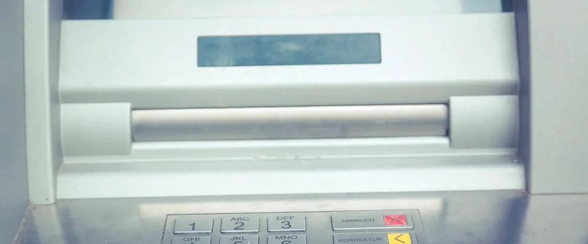

読みもの
高配当株を選ぶときに知っておくと役に立つことを、本サイトの実データを使って書いています。公開日の新しい順です。
 こどもNISAは必要か｜親のNISA枠が余っているなら急がなくてよい理由2027年1月から0〜17歳もNISAが使えます。年60万円・上限600万円で、買えるのは投資信託だけ、引き出しは12歳以降に限られます。親のNISA枠が余っているなら急がなくてよい理由と、役に立つ場面を整理しました。
こどもNISAは必要か｜親のNISA枠が余っているなら急がなくてよい理由2027年1月から0〜17歳もNISAが使えます。年60万円・上限600万円で、買えるのは投資信託だけ、引き出しは12歳以降に限られます。親のNISA枠が余っているなら急がなくてよい理由と、役に立つ場面を整理しました。 『金持ち父さん 貧乏父さん』を読む｜配当株は「お金を運んでくる資産」お金の本の入口としてよく挙がる『金持ち父さん 貧乏父さん』を紹介します。資産と負債の分け方という中心の考え方と、配当株との関係、この本だけでは足りない点（資産が払い続けられるかの見極め）を整理しました。
『金持ち父さん 貧乏父さん』を読む｜配当株は「お金を運んでくる資産」お金の本の入口としてよく挙がる『金持ち父さん 貧乏父さん』を紹介します。資産と負債の分け方という中心の考え方と、配当株との関係、この本だけでは足りない点（資産が払い続けられるかの見極め）を整理しました。 【2026年10月】高配当で財務も健全な候補12社｜10項目チェックの結果一覧2026-09-30時点で10項目のうち9項目を満たした12社の一覧と、前回からの入れ替わり。
【2026年10月】高配当で財務も健全な候補12社｜10項目チェックの結果一覧2026-09-30時点で10項目のうち9項目を満たした12社の一覧と、前回からの入れ替わり。 連続増配の会社は何社ある？｜10期一度も減配していないのは539社配当をずっと減らしていない会社は何社か。3,535社のデータから、実際の記録だけを数えました。
連続増配の会社は何社ある？｜10期一度も減配していないのは539社配当をずっと減らしていない会社は何社か。3,535社のデータから、実際の記録だけを数えました。 NISAで配当金を非課税にする手順｜買い方と受け取り方の設定NISAで配当を非課税で受け取るには、買い方のほかに受け取り方の設定が要ります。手順と、配当を出している3,010社という範囲を整理します。
NISAで配当金を非課税にする手順｜買い方と受け取り方の設定NISAで配当を非課税で受け取るには、買い方のほかに受け取り方の設定が要ります。手順と、配当を出している3,010社という範囲を整理します。- 配当金を再投資すると老後の収入はどう変わる？｜毎月2万円×25年で試算受け取った配当で同じ株を買い足すと、自分で出したお金が同じでも受け取れる配当は増えます。毎月2万円を25年つづけた場合を計算しました。
 NISAで配当金を非課税で受け取る方法｜受取方法の設定を忘れると課税されるNISA口座で買っても、受取方法を株式数比例配分方式にしていないと配当は課税されます。成長投資枠240万円・生涯1,800万円などの制度の数字と、手順・よくある思い込みを整理しました。
NISAで配当金を非課税で受け取る方法｜受取方法の設定を忘れると課税されるNISA口座で買っても、受取方法を株式数比例配分方式にしていないと配当は課税されます。成長投資枠240万円・生涯1,800万円などの制度の数字と、手順・よくある思い込みを整理しました。- 高配当で財務も健全な会社は3,535社中12社｜こつこつ配当をつくった理由給料以外の収入を、無理なく少しずつ増やしたい。売買のタイミングを当てずに続けるため、上場企業3,535社の配当と財務を毎朝10項目で見ています。高配当かつ財務が健全な候補は12社でした。
- 配当金で月1万円もらうには？｜利回り別に必要な投資額を計算月1万円は年120,000円。税金を考えると税引前で約150,593円の配当が必要です。利回りごとの必要額と、実際の候補で計算した金額。
 上場企業の69%が減配を経験｜減配しやすい業種・しにくい業種直近10期のどこかで配当を減らした会社は2,143社（69%）。減配は例外ではありません。業種ごとの差と、減配が必ずしも悪ではない理由。
上場企業の69%が減配を経験｜減配しやすい業種・しにくい業種直近10期のどこかで配当を減らした会社は2,143社（69%）。減配は例外ではありません。業種ごとの差と、減配が必ずしも悪ではない理由。- 売買タイミングを当てない配当投資｜10期ずっと減配なしの会社は662社配当は権利確定日に持っていれば受け取れます。直近10期で一度も減配していない会社は662社。株価を当てるかわりに「減配しにくいか」を見るという考え方。
- 高配当株を1株から買える証券会社8社を比較｜手数料・NISA・配当の受け取り方主要ネット証券8社を「配当を受け取る」目的で比較。1株から買えるか、スプレッドを含む実質コスト、NISA成長投資枠、株式数比例配分方式。2026-09-06に公式ページで確認。順位は付けません。
 高配当株は利回りだけで選んでいい？｜3,535社のデータで確かめたニュースの見出しでよく見る「高配当」。3,535社のデータでは、利回りが高くても財務の項目を満たす候補はごく一部にとどまります。
高配当株は利回りだけで選んでいい？｜3,535社のデータで確かめたニュースの見出しでよく見る「高配当」。3,535社のデータでは、利回りが高くても財務の項目を満たす候補はごく一部にとどまります。 配当性向100%超えの会社は15社｜高配当でも“払いすぎ”は危ない？配当性向が100%を超えている上場企業は15社（2026-09-04時点）。その意味と、ただちに危ないとは限らない理由。
配当性向100%超えの会社は15社｜高配当でも“払いすぎ”は危ない？配当性向が100%を超えている上場企業は15社（2026-09-04時点）。その意味と、ただちに危ないとは限らない理由。- 高配当株の落とし穴｜利回り上位20社で財務も健全なのは0社配当利回りの上位20社を10項目で判定すると、条件を満たしたのは0社でした。利回りが高くなる仕組みと、見落としやすい点。
- 配当はいつもらえる？｜権利確定日のしくみと9月に確定する180社9月に権利が確定するのは期末配当180社、中間配当1,300社。権利確定日の仕組みと注意点。

銀行株の高配当、財務はどう見る？｜一般企業と同じ物差しで測れない理由銀行業の自己資本比率の中央値は4.9%、一般の事業会社は56.9%。同じ物差しで測れない理由を実データで説明します。
以前の記事
新しい版がある記事です。